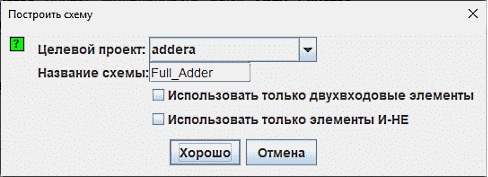

Автоматический синтез и генерация схемы
Нажатие кнопки Построить схему (Build Circuit) инициирует процесс автоматической генерации принципиальной схемы, аппаратная логика работы которой строго соответствует заданным аналитическим выражениям для каждого выхода. Порты ввода-вывода размещаются на холсте в вертикальный ряд (сверху вниз) в строгом соответствии с порядком их следования на вкладке Входы и выходы.
Синтезированные топологии обычно обладают упорядоченной геометрической структурой. Благодаря этому одно из неочевидных применений модуля «Комбинационный анализ» в Logisim-evolution заключается в перестроении (оптимизации трассировки) неаккуратно нарисованных чертежей. Однако следует учитывать, что алгоритм автогенерации опирается исключительно на математическую модель и не учитывает семантическую группировку логических блоков, которая могла бы быть интуитивно понятнее человеку-проектировщику.

При вызове функции Построить схему на экране появляется диалоговое окно настроек компиляции, требующее указать целевой проект и задать имя для новой схемы.

В случае совпадения введённого имени с уже существующей в проекте подсхемой, текущий чертёж будет полностью перезаписан новой сгенерированной топологией. Во избежание потери данных система предварительно запросит подтверждение этого действия.
Параметры базиса реализации
Диалоговое окно настроек синтеза предоставляет проектировщику два дополнительных параметра (флажка), определяющих элементную базу для построения схемы:
- Использовать только двухвходовые элементы (Use Two-Input Gates Only) — ограничивает количество входов для всех многовходовых вентилей (И, ИЛИ, ИСКЛ-ИЛИ) ровно двумя (за исключением логических инверторов НЕ, которые аппаратно остаются одновходовыми).
- Использовать только элементы И-НЕ (Use NAND Gates Only) — выполняет аппаратный синтез схемы в универсальном логическом базисе И-НЕ (базис Шеффера).
Допускается одновременная активация обоих параметров для построения топологии исключительно на дискретных двухвходовых вентилях И-НЕ.
Ограничение алгоритма:Автоматический транслятор не способен выполнить синтез схемы в базисе И-НЕ, если текущие булевы выражения содержат операцию строгой дизъюнкции (Исключающее ИЛИ / XOR). В подобных случаях параметр Использовать только элементы И-НЕ блокируется и становится недоступным для выбора.
Далее: Главное руководство пользователя.